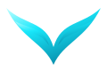
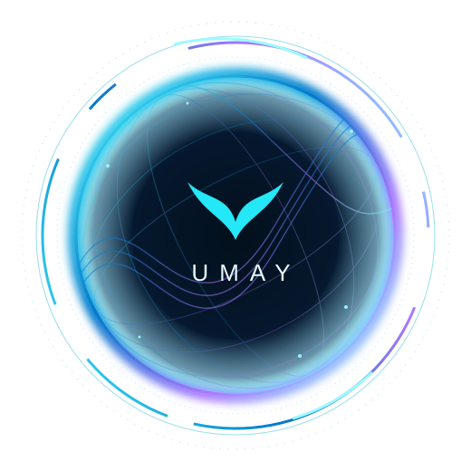

Konuşma bileşenleri
Türkçe konuşmayı tanıma ve seslendirme bu cihazda çalışır.

UMAYKişisel Yapay Zekâ AsistanınFikirlerini paylaş. Sorularını sor.
Seni tanıyan asistanınla kaldığın yerden devam et.
Veriüssü hesabınla kendi Umay’ına bağlan.
Güvenli giriş için varsayılan tarayıcın açılır.
Hesabını Umay’a bağladığında burası otomatik açılacak.

Konuşmaların, modellerin ve hafızan.
Hepsi tek bir yerde, seninle birlikte.
Birlikte düşünelim, üretelim, ilerleyelim.
Sorunu yaz ya da sesinle konuşmaya başla.
Bir soru sor ya da aklındaki fikri paylaş.
Sesini, konuşma bileşenlerini ve güncellemelerini buradan yönet.
Türkçe konuşmayı tanıma ve seslendirme bu cihazda çalışır.
Doğal konuştuğun, tek kişilik ve müziksiz bir kayıt seç. En iyi sonuç için 10–30 saniye önerilir. En fazla 50 MB MP3, 10 dakika.
Konuşma modellerinin kullandığı donanımı gör.
Umay 0.4.3 · Windows
Hesabın Veriüssü üzerinden yönetilir.
Sohbeti ve bilgisayar kontrolünü ayrı modellere ata. Seçimlerin bu cihazda, hesabına özel saklanır.
Yazılı ve sesli konuşmalarında yanıt verecek model.
Ekranı inceleyip fare ve klavyeyle görevlerini yürütecek model.
Yönetici yetkisi gereken işlemlerde Windows onayı istenir. Kilit açma ve Windows güvenli onayını sen tamamlarsın.
Konuşmalarından öğrenilenler, sohbet arşivin ve bu cihazdaki çalışma geçmişin.
Veriüssü hesabındaki hafıza kaydını burada görüntüleyebilirsin.
Buraya kaydedilen konuşmalar, sunucudaki sohbet silinse de bu cihazda kalır.
Bu alan Windows ile şifrelenir. Buradaki parolalar sohbet bağlamına eklenmez.
Bulunduğun yerdeki hava tahmini ve takip ettiğin önemli gelişmeler.
Henüz konum seçilmedi.
Kaynak: MET Norway · CC BY 4.0. Değerler tahmindir.
Umay açıkken depremler dakikada bir, haber akışları beş dakikada bir kontrol edilir.